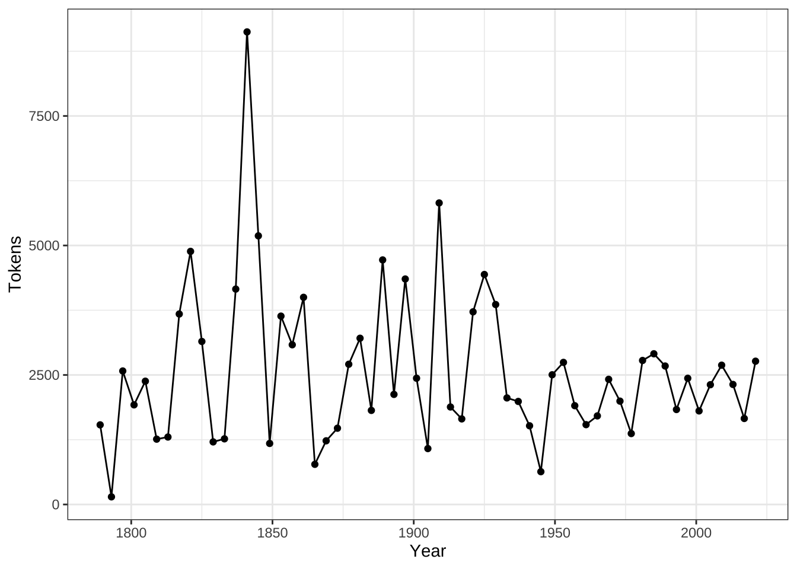
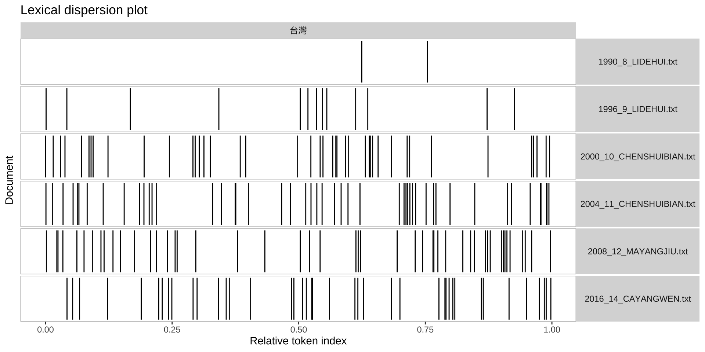
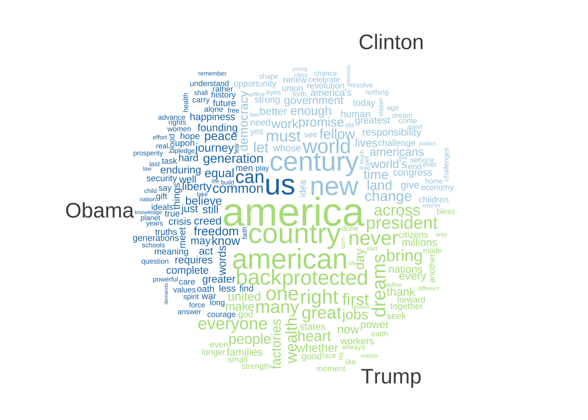
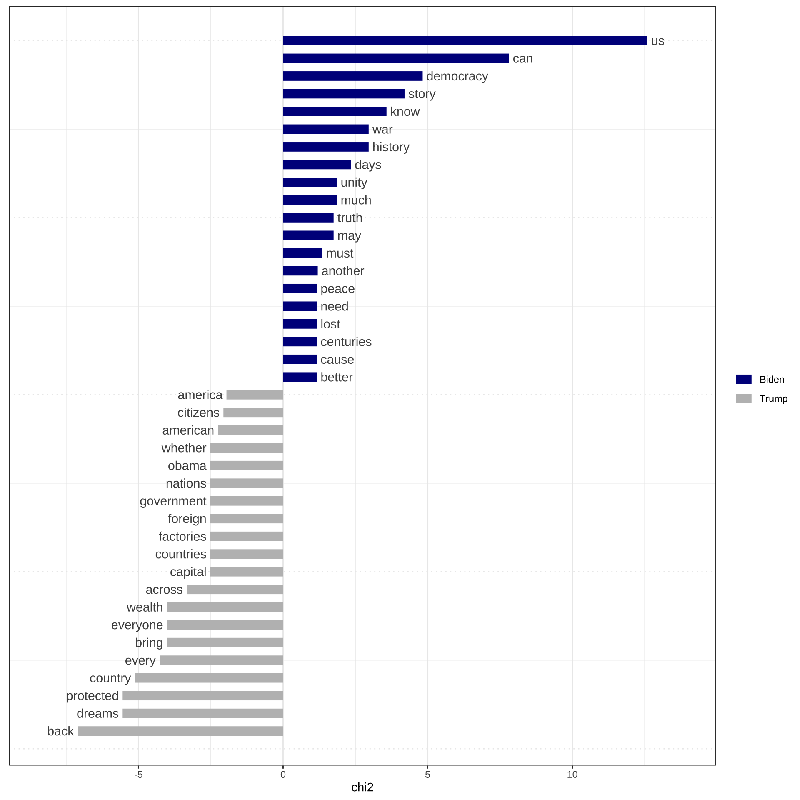
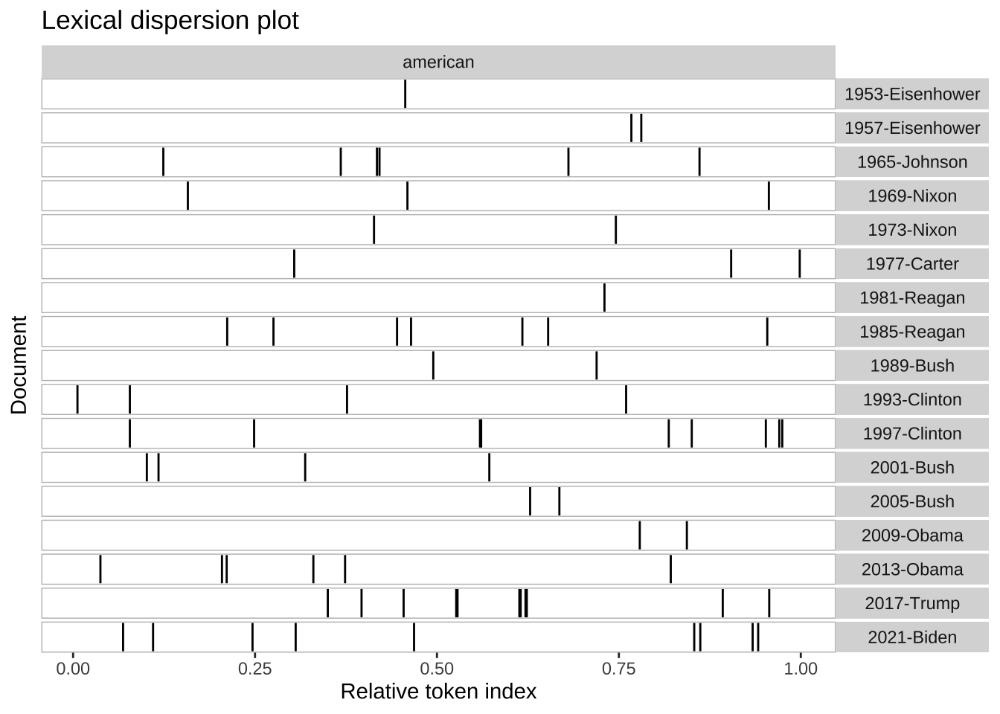
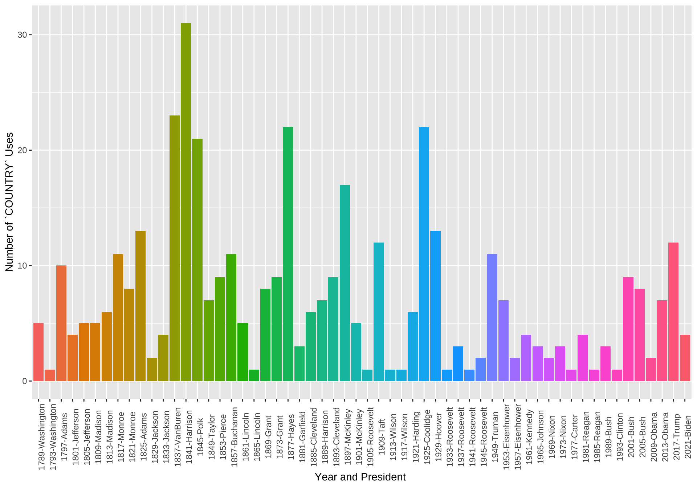
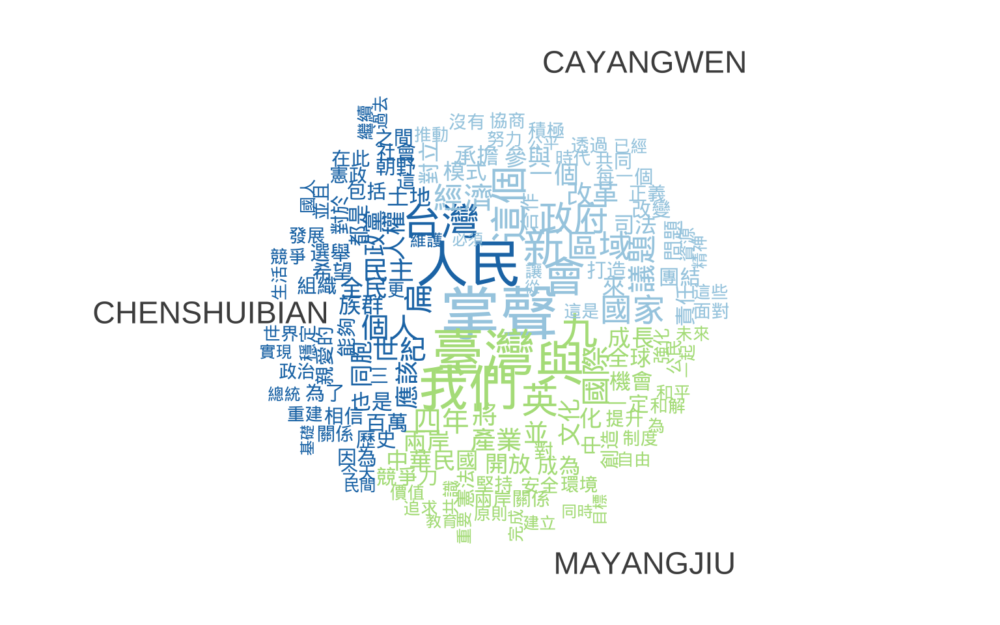

Chapter 13 Text Analytics: A Start
In this chapter, I will present a quick overview of computational text analytics with R. The most important package for exploratory text analysis is quanteda. As computational text analytics itself is an interesting topic, I would recommend other more advanced courses for those who are interested in this field (e.g., Corpus Linguistics, Computational Linguistics)
This chapter only provides you a very general overview of the common procedures/tasks in text processing.
13.1 Installing quanteda
There are many packages that are made for computational text analytics in R. You may consult the CRAN Task View: Natural Language Processing for a lot more alternatives.
To start with, this tutorial will use a powerful package, quanteda, for managing and analyzing textual data in R. You may refer to the official documentation of the package for more detail.
The libraryquanteda is not included in the default base R installation. Please install the package if you haven’t done so.
Also, as noted on the quanteda documentation, because this library compiles some C++ and Fortran source code, you need to install the appropriate compilers.
- If you are using a Windows platform, this means you will need also to install the Rtools software available from CRAN.
- If you are using macOS, you should install the macOS tools.
If you run into any installation errors, please go to the official documentation page for additional assistance.
The library quanteda contains all of the core natural language processing and textual data management functions.The following libraries work with quanteda, providing more advanced functions for computational text analytics.
quanteda.textmodels: includes the text models and supporting functions (i.e.,textmodel_*()functions).quanteda.textstats: includes statistic processing for textual data (i.e.,textstat_*()functions).quanteda.textplots: includes plotting functions for textual data (i.e.,textplot_*()functions).
library(quanteda)
library(quanteda.textplots)
library(quanteda.textstats)
library(tidyverse)
packageVersion("quanteda")[1] '3.3.1'13.2 Building a corpus from character vector
To demonstrate a typical corpus analytic example with texts, I will be using a pre-loaded corpus that comes with the quanteda package, data_corpus_inaugural. This is a corpus of US Presidential Inaugural Address texts and metadata for the corpus from 1789 to present.
Corpus consisting of 59 documents and 4 docvars.
1789-Washington :
"Fellow-Citizens of the Senate and of the House of Representa..."
1793-Washington :
"Fellow citizens, I am again called upon by the voice of my c..."
1797-Adams :
"When it was first perceived, in early times, that no middle ..."
1801-Jefferson :
"Friends and Fellow Citizens: Called upon to undertake the du..."
1805-Jefferson :
"Proceeding, fellow citizens, to that qualification which the..."
1809-Madison :
"Unwilling to depart from examples of the most revered author..."
[ reached max_ndoc ... 53 more documents ][1] "corpus" "character"We create a corpus() object with the pre-loaded corpus in quanteda– data_corpus_inaugural:
After the corpus is loaded, we can use summary() to get the metadata of each text in the corpus, including word types and tokens as well. This allows us to have a quick look at the size of the addresses made by all presidents.
In quanteda, it has implemented a default tokenization method for English texts. I think it has also implemented a default tokenization method for Chinese texts as well. For more control on the word segmentation, you may need to consult other segmentation packages (e.g., jiebaR, ckiptagger etc.). More details are usually discussed in ENC2045 or ENC2036.
corp_us %>%
summary %>%
ggplot(aes(x = Year, y = Tokens, group = 1)) +
geom_line() +
geom_point() +
theme_bw()
Exercise 13.1 Could you reproduce the above line plot and add information of President to the plot as labels of the dots?
Hints: Please check ggplot2::geom_text() or more advanced one, ggrepel::geom_text_repel()

13.3 Tokenization
The first step for most textual analyses is usually tokenization, i.e., breaking each long text into word tokens for linguistic analysis.
Tokens consisting of 1 document and 4 docvars.
1789-Washington :
[1] "Fellow-Citizens" "of" "the" "Senate"
[5] "and" "of" "the" "House"
[9] "of" "Representatives" ":" "Among"
[ ... and 1,525 more ]13.4 Keyword-in-Context (KWIC)
Keyword-in-Context (KWIC), or concordances, are the most frequently used method in corpus linguistics. The idea is very intuitive: we get to know more about the semantics of a word (or any other linguistic unit) by examining how it is being used in a wider context.
We can use kwic() to perform a search for a word and retrieve its concordances from the corpus:
kwic() returns a data frame, which can be easily exported as a CSV file for later use.
Please note that kwic(), when taking a tokens object as the input argument.
That is, please tokenize the corpus object with tokens() first before you perform more advanced textual analysis, e.g., kwic().
Also, with kwic(), the pattern you look for cannot be a multi-word linguistic pattern.
For Chinese, quanteda can take care of Chinese word segmentation but with rather limited capacity.
texts <- c("舞台正中間擺著一張「空著的導演椅」，影片一下全場鼻酸。",
"第58屆金馬獎頒獎典禮今（27）日在國父紀念館盛大登場，星光大道紅毯於下午5點30分登場。")
corpus_ch <- corpus(texts)
corpus_chCorpus consisting of 2 documents.
text1 :
"舞台正中間擺著一張「空著的導演椅」，影片一下全場鼻酸。"
text2 :
"第58屆金馬獎頒獎典禮今（27）日在國父紀念館盛大登場，星光大道紅毯於下午5點30分登場。" [1] "舞台" "正" "中間" "擺著" "一張" "「" "空" "著" "的" "導演"
[11] "椅" "」" "，" "影片" "一下" "全" "場" "鼻酸" "。" [1] "第" "58" "屆" "金馬獎" "頒獎典禮"
[6] "今" "（" "27" "）" "日"
[11] "在" "國父紀念館" "盛大" "登場" "，"
[16] "星光" "大道" "紅" "毯" "於"
[21] "下午" "5" "點" "30" "分"
[26] "登場" "。" 13.5 KWIC with Regular Expressions
For more complex searches, we can use regular expressions as well in kwic(). For example, if you want to include terror and all its other related word forms, such as terrorist, terrorism, terrors, you can do a regular expression search.
By default, the kwic() is word-based. If you like to look up a multiword combination, use phrase():
It should be noted that the output of kwic includes not only the concordances (i.e., preceding/subsequent co-texts + the keyword), but also the sources of the texts for each concordance line. This would be extremely convenient if you need to refer back to the original discourse context of the concordance line.
Exercise 13.2 Please create a bar plot, showing the number of uses of the word country in each president’s address. Please include different variants of the word, e.g., countries, Countries, Country, in your kwic() search.
13.6 Lexical Density Plot
Plotting a kwic object produces a lexical dispersion plot, which allows us to visualize the occurrences of particular terms throughout the texts.

corp_us_subset <- corp_us_tokens %>%
tokens_subset(Year > 1949)
textplot_xray(
kwic(corp_us_subset, pattern = "american"),
kwic(corp_us_subset, pattern = "people")
)
13.7 Document-Feature Matrix
Another important object class is defined in quanteda: the dfm. It stands for Document-Feature-Matrix. It’s a two-dimensional co-occurrence table, with the rows being the documents in the corpus, and columns being the features used to characterize the documents. The cells in the matrix often refer to the co-occurrence statistics between each document and the feature.
Usually, we first create the tokens version of the corpus (using tokens()) and then use dfm() to create the dfm version of the corpus from tokens. That is, it is recommened to use the tokens as the input for dfm.
[1] "dfm"
attr(,"package")
[1] "quanteda"Document-feature matrix of: 59 documents, 9,441 features (91.84% sparse) and 4 docvars.
features
docs fellow-citizens of the senate and house representatives :
1789-Washington 1 71 116 1 48 2 2 1
1793-Washington 0 11 13 0 2 0 0 1
1797-Adams 3 140 163 1 130 0 2 0
1801-Jefferson 2 104 130 0 81 0 0 1
1805-Jefferson 0 101 143 0 93 0 0 0
1809-Madison 1 69 104 0 43 0 0 0
features
docs among vicissitudes
1789-Washington 1 1
1793-Washington 0 0
1797-Adams 4 0
1801-Jefferson 1 0
1805-Jefferson 7 0
1809-Madison 0 0
[ reached max_ndoc ... 53 more documents, reached max_nfeat ... 9,431 more features ]We can see that in the first document, i.e., 1789-Washington, there are 2 occurrences of representatives, 48 occurrences of and
13.8 Feature Selection
A dfm may not be as informative as we have expected. To better capture the documental semantic similarity, there are several important factors that need to be more carefully considered with respect to the features of the dfm:
- The granularity of the features
- The informativeness of the features
- The distributional properties of the features
Not only does dfm() provide many arguments for users to specify conditions for features selection; in quanteda, we can also apply dfm_trim() to select important features for later analysis.
corp_dfm_trimmed <- corp_us %>%
tokens( remove_punct = T,
remove_numbers= T,
remove_symbols = T) %>%
dfm %>%
dfm_remove(stopwords("en")) %>%
dfm_trim(min_termfreq = 10, termfreq_type = "count",
min_docfreq = 3, max_docfreq = ndoc(corp_us)-1,
docfreq_type = "count")
dim(corp_us_dfm)[1] 59 9441[1] 59 140113.9 Top Features
With a dfm, we can check important features from the corpus.
people government us can must upon great
584 564 505 487 376 371 344
may states world
343 334 319 13.10 Wordclouds
With a dfm, we can visualize important words in the corpus with a Word Cloud. It is a novel but intuitive visual representation of text data. It allows us to quickly perceive the most prominent words from a large collection of texts.
corp_dfm_trimmed %>%
textplot_wordcloud(min_count = 50, random_order = FALSE,
rotation = .25,
color = RColorBrewer::brewer.pal(8, "Dark2"))
We can also compare word clouds for different subsets of the corpus:
corpus_subset(corp_us,
President %in% c("Obama", "Trump", "Clinton")) %>%
tokens(remove_punct = T,
remove_numbers= T,
remove_symbols = T) %>%
tokens_group(groups = President) %>%
dfm() %>%
dfm_remove(stopwords("en")) %>%
dfm_trim(min_termfreq = 5,
termfreq_type = "count") %>%
textplot_wordcloud(comparison = TRUE)
13.11 Keyness Analysis
When you have two collections of texts, we can use quantitative methods to identify which words are more strongly associated with one of the two sub-corpora. This is the idea of keyword analysis.

13.12 Flowchart
Finally, Figure 13.1 below provides a summary flowchart for computatutional text analytics in R.
Figure 13.1: Computational Text Processing Flowchart in R
13.13 Exercises
In the following exercise, please use the dataset demo_data/TW_President.tar.gz, which is a text collection of the inaugural speeches of Taiwan Presidents (till 2016).
You may load the entire text collection as a corpus object using the following code:
Exercise 13.3 Please create a data frame, which includes the metadata information for each text. You may start with a data frame you get from summary(corp_tw) and then create two additional columns—President and Year, which can be extracted from the text filenames in the Text column.
Hint: tidyr::extract()
After you create the metadata DF, please assign it to the docvars(corp_tw) for later analysis.
Exercise 13.4 Please create a lexical density plot for the use of “台灣” in all presidents’ texts.

Exercise 13.5 Please create a word cloud of the entire corpus corp_tw. In the word cloud, please remove punctuations, numbers, and symbols. The word cloud has to only include words whose frequency >= 20.
Exercise 13.6 Create word clouds showing the comparison of President Tsai (CAYANGWEN), Ma (MAYANGJIU), and Shuibian Chen (CHENSHUIBIAN).
Exercise 13.7 Please create a keyness plot, showing the preferred words used by President Tsai (CAYANGWEN) vs. President Ma (MAYANGJIU).
